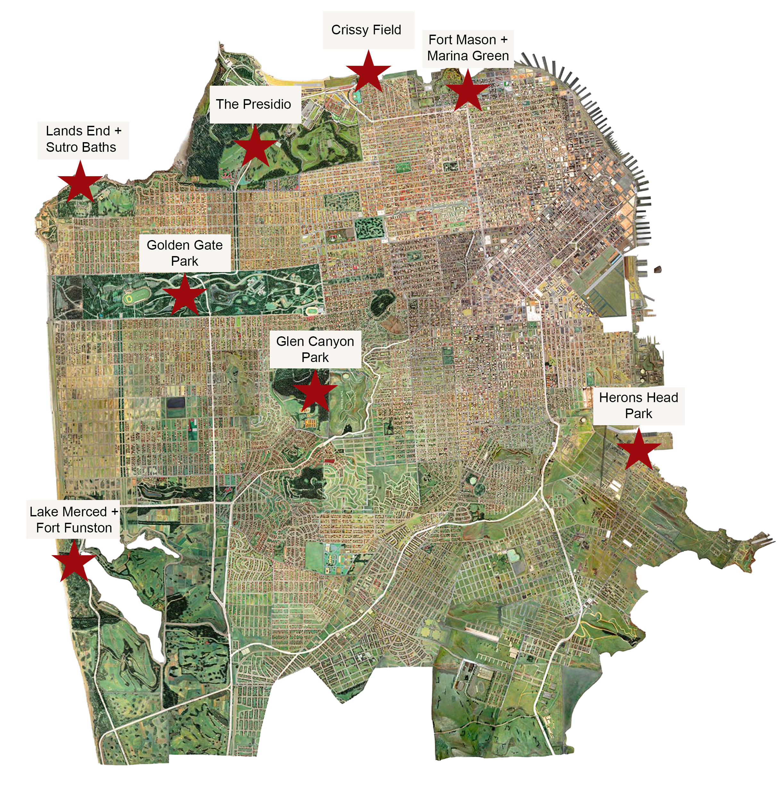

San Francisco may be small, but its habitats are wildly diverse: ocean cliffs, bay wetlands, wooded parks, and open grasslands all within a few miles. Where the landscape shifts, birds do too. Shorebirds along the Bay, seabirds on the Pacific, hawks overhead, songbirds in the trees.
This page highlights general areas in San Francisco where birding is consistently good. Pick a place, wander a little, and see what you find.
Lands End
Ocean Beach
Marina Green
Fort Funston
Bay Trail
Heron’s Head Park
Glen Canyon Park
McLaren Park
Lake Merced
Golden Gate Park
Presidio
Lincoln Park
Esprit Park
Forest Knolls
Corona Heights
Bernal Heights
Buena Vista Park
Mission Dolores Park
Alamo Square